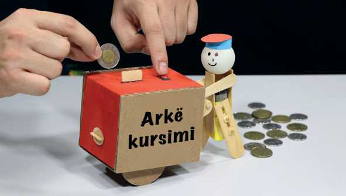
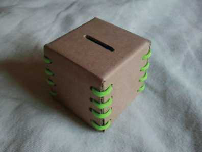

TEMATIKA 3: PLANIFIKIMI
3.NDËRTIMI I ARKËS SË KURSIMEVE
Ndihmë: si të punoj?
Kjo veprimtari bëhet me duar. Nëse e ke të vështirë të vizatosh ose të presësh, kërkoji një të rrituri të t’i përgatitë pjesët. Ti mund t’i prekësh, t’i palosësh dhe t’i ngjitësh.
(VEPRIMTARI PRAKTIKE)

Të kursesh do të thotë të mos i shpenzosh të gjitha paratë, por t’i ruash ato në një vend të sigurt. Arka e kursimit është si banka ku të rriturit ruajnë kursimet e familjes. Që në këtë moshë ju duhet të mësoni të planifikoni buxhetin tuaj, por edhe të kurseni paratë që mblidhni, për t’i shpenzuar ato më pas për një aktivitet ose ndonjë gjë që ju e vlerësoni si të rëndësishme. “Arka e kursimit” është një mënyrë e mirë për të mësuar se si të kurseni paratë.
- Bëni vetë një arkë kursimi duke ricikluar materiale.
- Mblidhni materialet që ju duhen dhe organizoni punën.
- Pasi ta krijoni arkën tuaj të kursimeve, hidhni aty monedhat e mbledhura dhe vendoseni atë në një vend të caktuar.
- Para se të vendosni për ta hapur arkën e kursimit, mendohuni mirë se për çfarë do t’i shpenzoni ato para.

Ju duhet ta mësoni vlerën e parasë dhe t’i shpenzoni ato me mençuri dhe aty ku duhet!